Möchten Sie das selbst erleben?
Ich begleite Sie persönlich nach Medjugorje, in einer kleinen Gruppe und mit viel Zeit für Gebet und Stille.
Impressionen
Eindrücke aus unseren Pilgerreisen der letzten Jahre: die Kirche St. Jakob, der Erscheinungsberg und der Kreuzberg, das Gebet am Abend und die Gemeinschaft unterwegs.
Das Herz von Medjugorje: die Pfarrkirche mit ihren zwei Türmen und der Außenaltar, an dem jeden Abend Rosenkranz, Heilige Messe und Anbetung gefeiert werden.
Pilgern verbindet: gemeinsam unterwegs auf den Bergen, Gespräche bei Tisch, Begegnungen mit Menschen aus aller Welt und ein Ausflug in die Altstadt von Mostar.
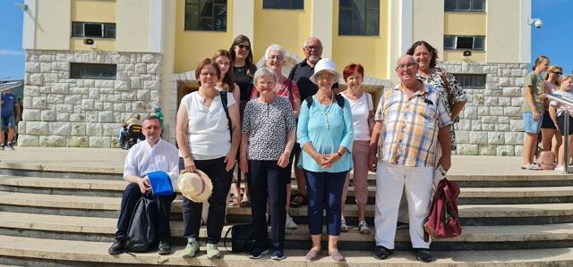
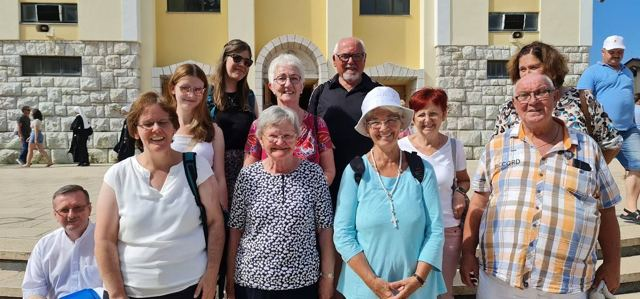
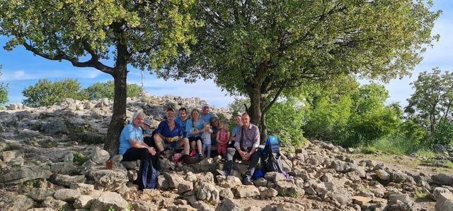
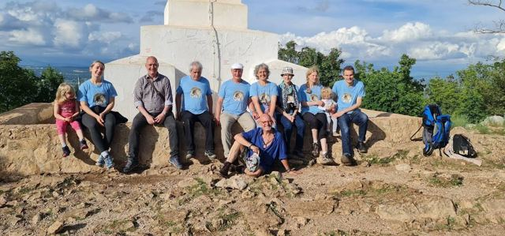
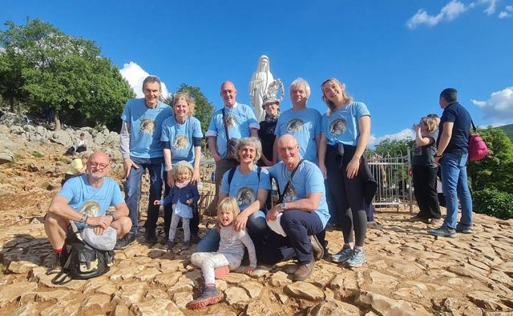
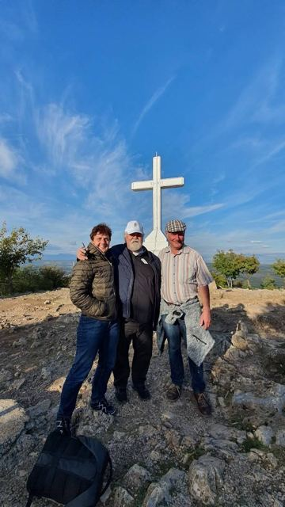
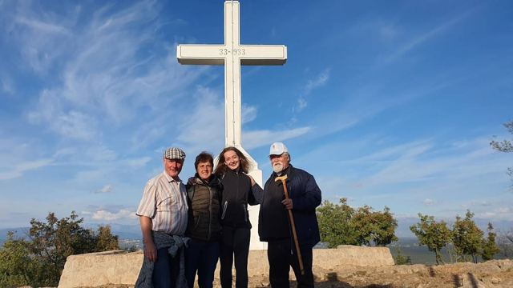
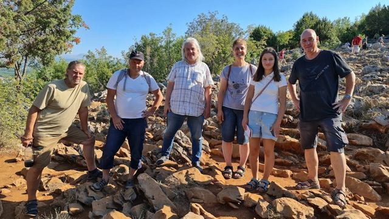
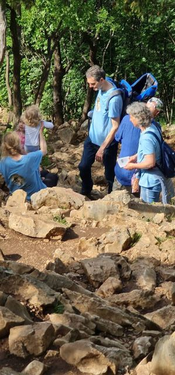
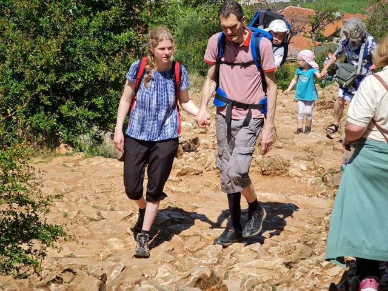
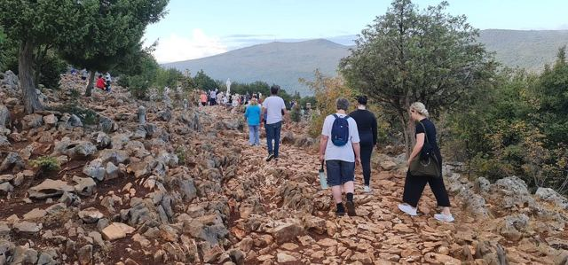
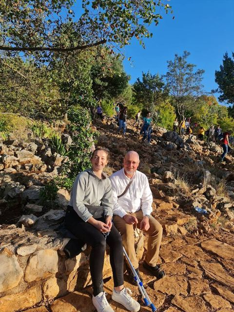
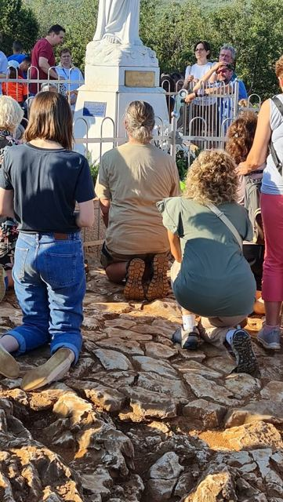
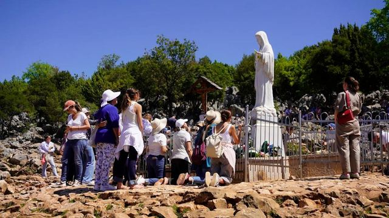
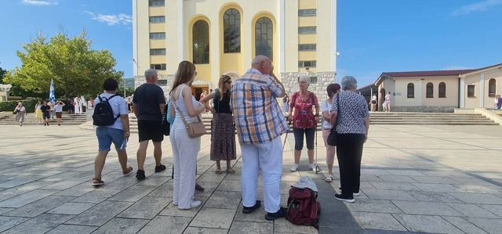
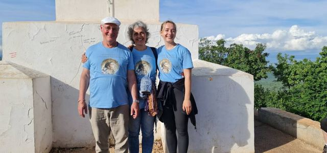
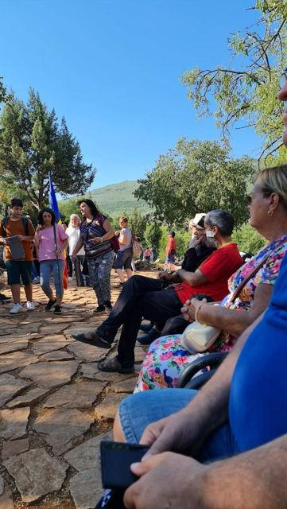
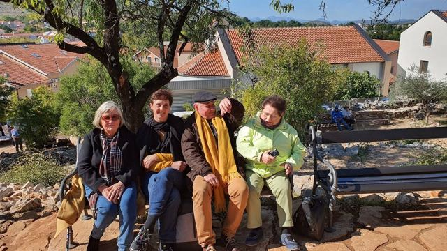
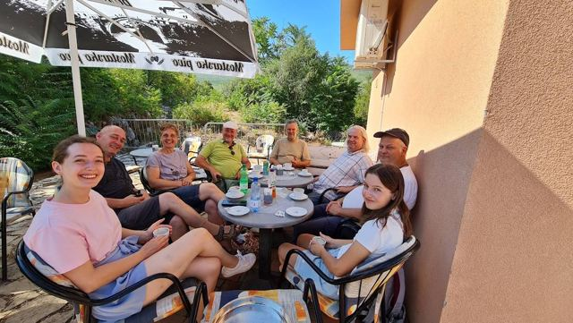
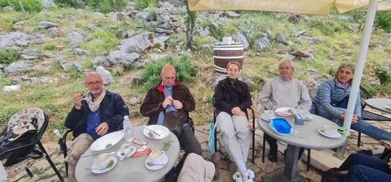
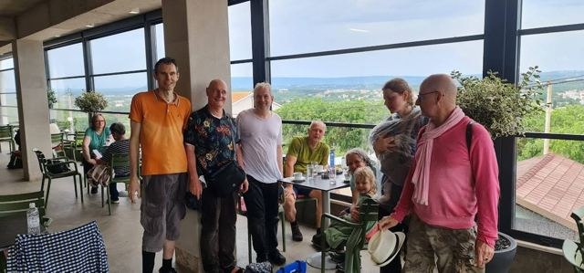
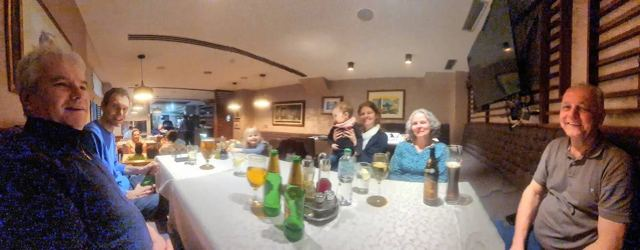
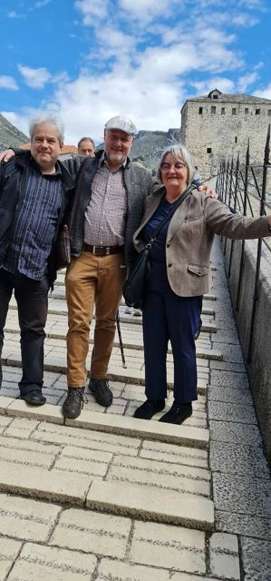
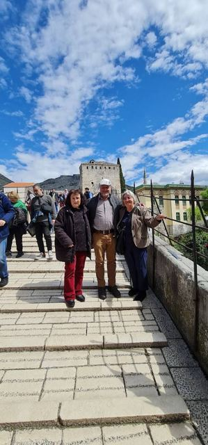
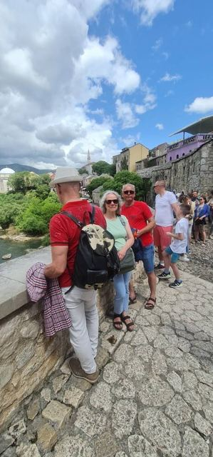
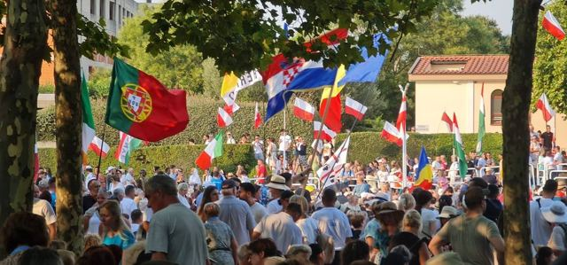
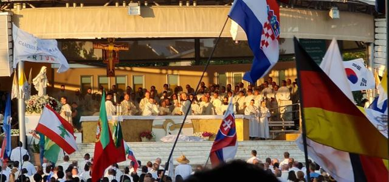
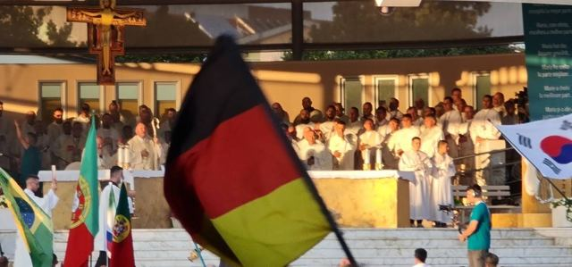
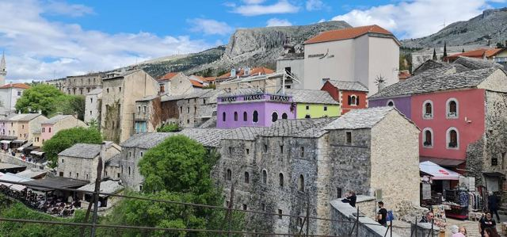
Auf dem steinigen Weg zum Ort der ersten Erscheinungen 1981 beten die Pilger die freudenreichen und schmerzhaften Geheimnisse des Rosenkranzes.
Über einen steinigen Pfad mit den Reliefs der vierzehn Kreuzwegstationen geht es in rund eineinhalb Stunden hinauf zum großen weißen Betonkreuz, das die Pfarrei 1933 errichtet hat. Oben öffnet sich der Blick weit über das Tal.
Viele Pilger suchen in Medjugorje vor allem eines: Zeit für Gott. Sie knien vor der Kirche, beten still auf den Bergen, lesen in der Schrift oder verweilen vor der Muttergottes und dem Auferstandenen.